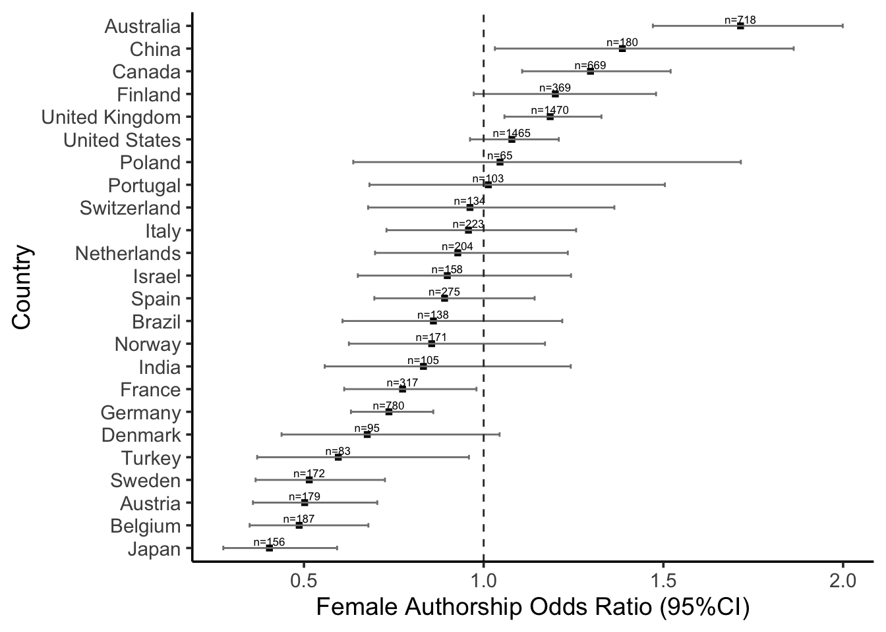
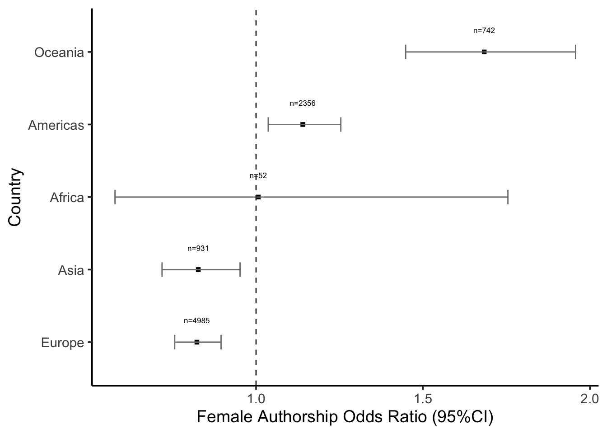

Gender analysis of the music psychology journals since 2000 (Musicae Scientiae, Psychology of Music, Music Perception, Journal of New Music Research, and Music & Science).
Entries in the merged database: 3926 Entries in the author-expanded database: 9922 Entries in the author-expanded database after filtering editorials etc: 9662 Entries in the author-expanded database after filtering empty: 9651
source('scripts/attribute_country.R') # Add country affiliations
Entries in the author-expanded database after author affiliations: 9630
source('scripts/attribute_gender.R') # Adds gender attributions (precalculated with API)
Gender
N
Percent
ambiguous
32
0.35
female
3701
40.56
male
5365
58.79
unknown
27
0.30
All
9125
100.00
Entries in the author-expanded database after filtering books/unattributed: 9066
source('scripts/create_keys.R') # Add keys for authors and study+author
Single authors count: 778 Single + last authors count: 3373 Unique authors count: 5312 Unique countries count: 63
source('scripts/clean_citations_and_OA.R') # Process citations and OA statussource('scripts/attribute_gender_diagnostics.R') # Process citations and OA status
Attaching package: 'modelsummary'
The following object is masked from 'package:parameters':
supported_models
The following object is masked from 'package:insight':
supported_models
Unique studies: 3373
Unique Entries as studies and author combinations: 9066
Number of rows: 9066
Number of studies across journals
JOURNAL
N
Percent
Journal of New Music Research
563
16.69
Music and Science
265
7.86
Music Perception
675
20.01
Musicae Scientiae
639
18.94
Psychology of Music
1231
36.50
All
3373
100.00
Prop. over .90 conf. = 0.892786234281932 /nProp. over .95 conf. = 0.866644606221046 /nProp. under .55 conf. = 0.00981689830134569 /nProp. under .55 conf. = 89 /n/n *** +——–+——–+——+ | | female | male | +========+========+======+ | Mean | 0.96 | 0.97 | +——–+——–+——+ | Median | 1.00 | 1.00 | +——–+——–+——+
Table: Probability of API attributed Gender.
Citation counts across Gender # A tibble: 1 × 10 estimate estimate1 estimate2 statistic p.value parameter conf.low conf.high 1 -2.32 19.9 22.2 -3.11 0.00186 8520. -3.79 -0.860 # ℹ 2 more variables: method , alternative # A tibble: 1 × 4 statistic p.value method alternative
1 9467860. 0.000170 Wilcoxon rank sum test with continuity correct… two.sided
female
male
Mean
19.89
22.21
upperCI
20.96
23.21
lowerCI
18.82
21.21
Gender Distribution
est
lwr.ci
upr.ci
0.408
0.398
0.419
0.592
0.581
0.602
source('scripts/export_gender_data.R')
Summarise
source('scripts/summarise_gender.R') # different summaries
Attaching package: 'modelsummary'
The following object is masked from 'package:parameters':
supported_models
The following object is masked from 'package:insight':
supported_models
Gender
N
Percent
female
3701
40.82
male
5365
59.18
All
9066
100.00
Adding missing grouping variables: `BIBTEXKEY`
Top 5 names.
first_name
n
Andrea
60
Laura
50
Jane
48
Maria
45
Elizabeth
41
Number of coauthors:
median: 2 mean: 2.688 sd: 1.77 max: 34
Quantify
source('scripts/quantify_authorship.R') # use Odds
name
Odds_ratio
CI_low
CI_high
Single
1.1022995
0.9480282
1.2816751
First
1.4237952
1.2987228
1.5609126
Coauthor
0.9865031
0.9030958
1.0776138
Last
0.7338588
0.6678541
0.8063867
[1] “5-year growth rate of female authorships:”
Type
AAGR
First
11.13
Coauthor
-11.13
Last
-9.50
source('scripts/citations.R') # Citations and gender
Warning: Unknown or uninitialised column: `CI_lower`.
Warning: Unknown or uninitialised column: `CI_upper`.
Warning: Unknown or uninitialised column: `CI_lower`.
Warning: Unknown or uninitialised column: `CI_upper`.
Warning: Unknown or uninitialised column: `CI_lower`.
Warning: Unknown or uninitialised column: `CI_upper`.
Warning: Unknown or uninitialised column: `CI_lower`.
Warning: Unknown or uninitialised column: `CI_upper`.
print(knitr::kable(citestats_all, digits =2, caption ='Citations across all authors'))
Citations across all authors
Gender
Md
M
Q75
CI_lower
CI_upper
female
9
19.89
22
9
10
male
10
22.21
27
9
10
print(knitr::kable(stats_all))
statistic
p.value
parameter
method
14.13713
0.00017
1
Kruskal-Wallis rank sum test
source('scripts/open_access.R') # OA and genderprint(knitr::kable(author_OA, digits =2, caption ='Open access across all authors'))
Open access across all authors
Odds_ratio
CI
CI_low
CI_high
Type
1.51
0.95
1.31
1.75
First
1.07
0.95
0.92
1.23
Co
0.85
0.95
0.72
1.01
Last
Geographical
source('scripts/country_table.R') # OK

source('scripts/visualise_gender.R') # OK
Top countries 
#source('scripts/table_continent.R') # IN progress
 [1] “5-year growth rate of female authorships:”
[1] “5-year growth rate of female authorships:”